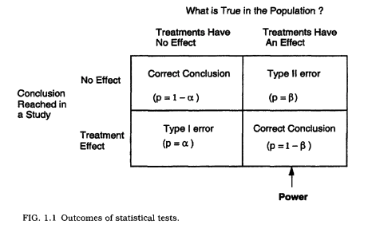

library(tidyverse)
library(caret)
df <- read.csv("beyonce.csv")
plot(danceability ~ album_release_year, data=df)
abline(lm(danceability ~ album_release_year, data=df), col="red")
summary(lm(danceability ~ album_release_year, data=df))
abline(lm(acousticness ~ album_release_year, data=df), col="blue")
abline(lm(speechiness ~ album_release_year, data=df), col="green")Week 5
Tuesday
On Tuesday, we broke the class into a few different topics, including order effects (often called sequential effects), types of errors, and calculating statistical power.
What do we mean by bias?
For our purposes, let’s define it as:
consistent and systematic deviation from the expected norm stemming from a flaw in the design of study.
Order Effects
“The order of presenting the treatments affects the dependent variable.” (Cozby, 137)
(sometimes called sequence effects)
Recency Bias: People treat the most recently presented things differently from the others.
Primacy Bias: People treat the things presented first differently than they would the others.
We can avoid these by randomizing. It’s even one of the slogans.
- RANDOMIZE, RANDOMIZE, RANDOMIZE.
Sometimes simple randomization won’t work. Maybe there are repeated measures and you don’t want them to be presented back-to-back, for example. Or maybe the order is an effect that you’re actually interested in. In some of these cases, a latin square design is sometimes a good way to go:
| First | Second | Third | Fourth |
|---|---|---|---|
| A | B | C | D |
| B | C | D | A |
| C | D | A | B |
How many [X] do I need?
A common question is how many of something must one have for a study. It’s often not feasible to run thousands of participants, or encode entire volumes of scores. First we should cover a few preliminaries:
- Types of errors
- Effect Size
- Power
Consider the following syllogism:
From Pollard and Richardson (1987):
- “If a person is American then they are probably not a member of Congress; this person is a member of Congress; therefore this person is probably not an American.”
This is an interesting way of showing that the likelihood of one thing happening (for example, rejecting a null hypothesis), is not necessarily symmetrical with the opposite happening (rejecting the hypothesis).
Sensitivity
“Whenever you find a null result and it is interesting to you that the result is null, you should always indicate the sensitivity of your analysis.” (Dienes, p.68)
Power
Confidence Intervals
Finding an effect significantly different from another reference point.
Types of Errors
Type I Error: Wrongly claiming something to be true, useful or knowable.
Type II Error: Wrongly claiming something to be false, useless or unknowable.
Put another way:
- Type I error is when the null is true and we reject it.
- Type II error is when the null is false and we accept it.
It might be useful to define alphas and betas here:
\(\alpha\) = The part of a distribution that is so extreme that we can reject the likelihood of it happening (usually in alignment with our maximum accepted p-value.)
- Another way of thinking about it is that \(\alpha\) is the long-term error rate for a specific type of error: saying that the null is false when it is true (see Dienes, p.62)
\(\beta\) = When the null is false, \(\beta\) is the proportion of times that we accept it, even though it’s false.
This image (from Murphy and Myors, 2004) is useful:

put another way…
- \(\alpha\) = \(P(rejecting H_0 \mid H_0)\)
- \(\beta\) = \(P(accepting H_0 \mid H_0 false)\)
(from Dienes, p.63)
| Decision | \(\ H_0\) true | \(\ H_0\) false |
|---|---|---|
| Accept \(\ H_0\) | 3800 | 500 |
| Reject \(\ H_0\) | 200 | 500 |
| Totals | 4000 | 1000 |
proportion of Type I errors shown when the null is true is 200/5000 (.05)
But what if we define a type I error as ’the probability of a Type I error _when we have rejected the null’?
This means we consider only the cases when we have rejected the null. (200/700, or 29%)
The point: Using only a significance level of 5% does not guarantee that only 5% of all published significant results are an error.
\(\alpha\) and \(\beta\)
- Notice how \(\beta\) can be very different from \(\alpha\).
- Controlling one does not mean you have controlled the other.
- Power is defined as 1-\(\beta\).
- Put another way, power is:
- \(P(rejecting H_0 \mid H_0 false)\)
Stopping Rules
-Neyman and Pearson would argue that you need to adequately define the conditions under which you will stop collecting data a priori.
- Believe it or not, anything can be “significant” if you just keep collecting data forever.
Ethics?
- the question for you is, is a Type II error as important as a Type I?
- If so, you could set both \(\alpha\) and \(\beta\) at .05 (power would be .95).
- If you think that type II errors are not quite as important, one could set the \(\beta\) higher, at something like .1, for example.
Steps for \(\beta\)
Estimate the size of effect that you think is interesting, given that your theory is true.
Estimate the amount of noise that your data will have.
- “The probability of detecting an effect depends not just on how big the effect is, but how much noise there is through which you are trying to detect the effect.” (Dienes, p.64)
What’s your stopping rule?
- Can you run as many participants as you’d like until you get a significant result?
What if you’d like to add tests or conditions?
If you plan it ahead of time, then you can stick with your original \(\alpha\).
if you would like to test other things, as you go, you need to correct for multiple tests.
- A standard (and conservative) approach to this is the Bonferroni correction, in which you divide \(\alpha\) by the number of tests. (so .05/2 for two tests, .05/3 for three tests, etc.).
Criticisms of Neyman-Pearson
(taken from Dienes, p.76)
- Inference consists of simple acceptance and rejection
- Null hypothesis testing encourages weak theorizing
- In the Neyman-Pearson approach it is important to know the reference class–we must know what endless series of trials but never did.
Thursday
On Thursday, we looked at regression modeling and fits. We began by looking at Beyonce’s Spotify data again:
What would a more explanatory model look like? We could look at different models, predicting danceability, acousticness, speechiness, valance, or perhaps danceability, but with more predictor variables.
summary(lm(danceability ~ album_release_year + acousticness + speechiness, data=df))
dance_model <- lm(danceability ~ album_release_year, data=df)
acoustic_model <- lm(acousticness ~ album_release_year, data=df)
speech_model <- lm(speechiness ~ album_release_year, data=df)
valence_model <- lm(valence ~ album_release_year, data=df)
combined_model <- lm(danceability ~ album_release_year + acousticness + speechiness + valence, data=df)But how can we tell which of these is more predictable? For this, we looked at Akaike’s ‘An Information Criterion’ (or AIC).
AIC(dance_model,
acoustic_model,
speech_model,
valence_model,
combined_model)There are other similar tools, such as BIC or SBC (Schwarz’s Bayesian criterion) (or BIC):
BIC(dance_model,
acoustic_model,
speech_model,
valence_model,
combined_model)We looked at some other possibilities for regression, including stepwise (forward and backward), which can be employed in times when collinearity is high.
step(lm(danceability ~
album_release_year + acousticness +
speechiness + valence, data=df),
direction="backward")
step(lm(danceability ~
album_release_year + acousticness +
speechiness + valence, data=df),
direction="forward")We then looked at Debussy performance practice over time, examining whether pieces slowed down, and what the nature of tempo flexibility might look like:
### load the data
debussy_data <- read.csv("debussy_performance_data.csv", header=TRUE)
debussy_data$performer <- as.factor(debussy_data$performer)
debussy_data$tempo <- as.numeric(debussy_data$tempo)
debussy_data$year <- as.numeric(debussy_data$year)
### get averages.
by_performer <- debussy_data %>% group_by(piece, performer)
tempi <- summarise(by_performer,
flex = sd(tempo, na.rm = TRUE),
tempo = mean(tempo, na.rm = TRUE),
year = mean(year, na.rm= TRUE))
book_2 <- debussy_data %>% filter(str_detect(piece, "^2"))## plot the data and see what the overall trend is.
plot(tempo ~ year, data = tempi)
abline(lm(tempo ~ year, data = tempi), col="red")
text(tempi$year, tempi$tempo-1, labels=tempi$performer)
summary(lm(tempo ~ year, data = tempi))
des_pas <- tempi %>% filter(piece == "1.6")
plot(tempo ~ year, data = des_pas)
abline(lm(tempo ~ year, data = des_pas), col="red")
summary(lm(tempo ~ year + flex, data = des_pas))We can look at whether tempo is predicted by year, and by flexibility:
year <- lm(tempo ~ year, data = des_pas)
year_flex <- lm(tempo ~ year + flex, data = des_pas)
flex <- lm(tempo ~ flex, data = des_pas)
AIC(
year,
flex,
year_flex
)And then comparing linear and polynomial models.
plot(lm(tempo ~ year + I(year^2), data = tempi))
ggplot(des_pas, aes(year, tempo) ) + geom_point() +
stat_smooth(method = lm, formula = y ~ poly(x, 2, raw = TRUE))
linear <- lm(tempo ~ year, data = tempi)
poly_2 <- lm(tempo ~ year + I(year^2), data = tempi)
poly_3 <- lm(tempo ~ year + I(year^3), data = tempi)
AIC(linear,
poly_2,
poly_3)